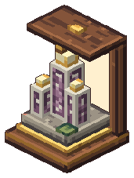

茶屋家具 · 柚子家具馆
柚子家具馆怎么买、3D 家具怎么摆、哪些家具能打开玩法，以及专精、图鉴、许愿池、星渊里怎么拿家具
一句话
茶屋家具都是能摆在家里的 3D 实体模型：拿着右键方块表面摆放，左键收回。很多家具右键就能打开对应玩法（出货、萌宠、留言簿、工坊、锻造……），把家布置好，大部分日常不出门就能做完。每件家具长什么样，见 模型展示。
柚子家具馆 /npcshop furniture
商业大街西侧的家具匠人 柚子（右键 NPC），或输入 /npcshop furniture 打开 🪑 柚子家具馆；菜单里走主菜单「🛒 商业街」→「🪑 柚子家具馆」。店里一共 64 件在卖的茶屋家具，全服只有这一家卖家具。
- 第一排：9 个分类标签——🏠 全部家具，和 8 类装饰（座椅、桌台、收纳·床铺、灯具、厨房、墙饰·地毯、绿植、鼠鼠茶屋）。
- 第二排正中：⚒ 工作台标签，单独一页放 8 件「玩法入口」家具。
- 中间三排：每页最多 21 件商品，左键买 1 件；每件都写着尺寸、摆法、互动和价格（一页不满 7 件时排在中间那排正中）。
- 最后一排：上一页 · 💰 我的余额 · 返回商业街 · ❓ 家具怎么摆 · 下一页。
福气值 ≥100 时家具 9 折（价格里已算好）。祝尼魔果酱展示架、祝尼魔毛绒玩偶要等全服修好「❄ 冬季暖炉包」才能买，修好「⛏ 矿洞星辉包」后半价。杂货铺 /shop 已经不卖家具了。
| 分类 | 件数 | 有哪些 |
|---|---|---|
| 🪑 座椅 | 8 件 | 芝芝软垫坐垫、樱木靠背椅、茶屋圆木凳、紫藤坐垫、樱花长椅、鼠鼠软沙发、暖绒扶手椅、和室靠背座椅 |
| 🍵 桌台 | 6 件 | 圆矮桌、茶室方桌、长茶桌、读书写字桌、樱花小边几、暖桌被炉 |
| 📚 收纳·床铺 | 9 件 | 祝尼魔果酱展示架、樱木书架、茶具柜、桐木阶梯柜、墙上小木架、竹编收纳篮、回收木箱、樱花被褥、鼠鼠木框床 |
| 🏮 灯具 | 8 件 | 暖黄小台灯、纸行灯、红纸灯笼、樱花串灯、铜烛台、石灯笼、守夜小茶炉、雾沼紫晶灯 |
| 🍚 厨房 | 4 件 | 洗碗台、鼠鼠电饭煲、碗碟架、料理台 |
| 🖼 墙饰·地毯 | 9 件 | 晴天风铃、樱花挂轴、格子窗（带窗帘）、鼠鼠挂钟、鼠纹暖帘、鼠鼠家纹匾额、榻榻米、樱花圆地毯、鼠鼠脚垫 |
| 🌿 绿植 | 6 件 | 星露樱花盆栽、龟背竹大盆栽、吊篮绿萝、生花花器、竹子盆景、窗台多肉三连 |
| 🐭 鼠鼠茶屋 | 9 件 | 桌面茶具、祝尼魔毛绒玩偶、鼠鼠大玩偶、茶屋收银柜台、茶屋立式菜单、招财鼠、茶壶展示台、萌宠藤编小窝、鼠鼠迎客邮筒 |
| ⚒ 工作台 | 8 件 | 铁壶炭炉、茶屋发酵木桶、烘焙石窑、星露铁砧台、鉴宝台、委托告示板、饰品梳妆台、茶屋出货箱 |
星渊纪念家具（守夜小茶炉、雾沼紫晶灯）和回收木箱也会出现在分类页里，但不卖，点一下会告诉你去哪拿。原来的「🔥 炭火灶台」已停售，外观换给了 3D 茶屋烹饪灶台；已经摆着的炭火灶台照常能当灯用。
⚒ 工作台页
工作台页一共 8 件玩法入口家具：
| 家具 / 设施 | 右键做什么 | 价格 |
|---|---|---|
| ♨ 铁壶炭炉 | 右键喝茶回血；潜行右键打开茶屋工坊（站点 +15%） | 320 币 |
| 🍶 茶屋发酵木桶 | 打开茶屋工坊（站点 +15%，同原版木桶） | 480 币 |
| 🧱 烘焙石窑 | 打开茶屋工坊（站点 +15%，同营火） | 680 币 |
| ⚒ 星露铁砧台 | 打开锻造坊 /forge | 880 币 |
| 💎 鉴宝台 | 打开晶洞鉴宝 /geode | 680 币 |
| 📜 委托告示板 | 挂墙；打开委托板 /order | 360 币 |
| 💍 饰品梳妆台 | 打开饰品匣 /accessory | 520 币 |
| 📦 茶屋出货箱 | 一键卖出背包物产（同 /sell） | 420 币 |
3D 机器不在家具馆卖：宴席烹饪灶台在 /feast，牧场 4 台加工机在 /ranch，3 档自动洒水器在农耕 /farm 的「肥料与洒水器」页，3D 玻璃生态瓶在捕虫商店 /bug。价格不变，摆放规则（不叠放、能摆在地毯上）也和家具一样。
怎么摆放
- 摆放：拿着家具右键方块表面。正面朝着你；单格家具按 45° 取整朝向，多格家具按 90° 取整，从你点的那格往右手边（宽）和往前（深）延伸。
- 每一格都要空：多格家具摆放前会检查它要占的每一格——不能有方块、不能和别的家具重叠，而且你要有那里的建造权限。放不下时动作栏会告诉你哪里挡住了。
- 🖼 挂墙（挂轴、格子窗、挂钟、暖帘、匾额、墙上小木架、委托告示板）：右键方块侧面挂上。
- 🏮 吊顶（红纸灯笼、樱花串灯、吊篮绿萝）：右键方块底面挂上。晴天风铃地面、天花板都行。
- 🟩 地毯层（榻榻米、樱花圆地毯、鼠鼠脚垫）：只能铺在方块顶面，每一格下面都要是实心地面。地毯上面还能再摆一件：拿着家具、3D 烹饪灶台、宴席、牧场加工机或玻璃生态瓶直接右键地毯，就摆在地毯上。
- 不叠放：茶屋家具、烹饪灶台（和地上的宴席）、牧场加工机、生态瓶之间不能摆在同一格；摆了家具的格子也不能再放原版方块。
- 🪑 坐下：椅子、凳子、坐垫、长椅、沙发、被褥、床都能右键坐，按 Shift 起身。长椅和沙发两个位置都能坐，同一个位置只能坐一个人。床和被褥只是坐着歇一会，不改出生点、不能睡觉。
- 💡 真光源：灯具会真的照亮周围（光照 10–14，见下面的表），右键开关；点亮时模型全亮。
- 📦 收回：左键或潜行 + 右键，原样退回 1 件。工坊站点（发酵木桶、烘焙石窑、铁壶炭炉）只能左键收回，因为潜行右键是开工坊。桌上摆着宴席时要先把菜收走才能收桌。
- 谁能动：只有家具的主人和搭子能收回家具、开关灯；其他人只能坐、喝茶和右键互动。
- 家具都不是箱子：茶具柜、阶梯柜这些只是装饰，不能存东西。
家具联动玩法
不加新规则：家具只是把已有玩法「接」到家里，规则和数值都和原来的指令一样。
厨房：宴席灶台与宴席上桌
- 🍳 3D 茶屋烹饪灶台（1200 币，在
/feast买）：右键打开两页菜单——🍲 家常料理（就是/kitchen茶屋食谱）和 🍳 宴席大餐；烹饪中右键是颠勺、潜行右键打开家常料理。锅里没菜时潜行右键收回。 - 宴席上桌：拿着做好的宴席右键圆矮桌、茶室方桌、长茶桌、樱花小边几、暖桌被炉，菜就摆在桌面上；长茶桌每格一份。
- 🔪 料理台、📋 茶屋立式菜单：右键打开茶屋食谱。
工坊站点 ×1.15
和原版木桶、营火一样，在工坊站点旁打开 /brew 茶屋工坊，制作速度 +15%：
- 🍶 茶屋发酵木桶（同木桶）、🧱 烘焙石窑（同营火）：直接右键打开工坊。
- ♨ 铁壶炭炉：右键喝一杯热茶回血，潜行 + 右键打开工坊。
- 原版木桶、营火照样算站点。
其他玩法入口
| 家具 | 右键 |
|---|---|
| ⚒ 星露铁砧台 · 💎 鉴宝台 · 📜 委托告示板 · 💍 饰品梳妆台 | 锻造坊 · 晶洞鉴宝 · 委托板 · 饰品匣 |
| 💰 招财鼠 | 今日运势签（每天抽签规则不变） |
| 🕰 鼠鼠挂钟 | 报游戏时间和当前季节 |
| ♻ 回收木箱 | 打开环保回收站 |
| 🍵 桌面茶具 · ♨ 铁壶炭炉 | 品茶：生命恢复 8 秒 + 2 点饱食度（30 秒冷却） |
1.8.0 新增：5 件联动家具



社交互动家具
| 家具 | 主人 / 搭子右键 | 访客右键 |
|---|---|---|
| 📮 鼠鼠迎客邮筒 · 📚 读书写字桌 | 看自家 /guestbook 留言簿 | 看屋主的留言簿，聊天栏弹出 [👍 点赞送花] [✍ 写便利贴] |
| 🎏 鼠纹暖帘 | 看家园迎客开没开（/visit toggle 开关） | 直接给屋主点赞送花（同 /like：每天 3 朵、同一家每天 1 次，双方各 10 币 + 5 福气值）；屋主只租了庄园、没 /sethome 也能送 |
| 🧾 茶屋收银柜台 | 摇响迎客铃，打开柜台主人（和搭子）的箱子店在售专柜；人在店里 24 格内点商品直接开购买页，不用传送。店主还没开店时打开全服名录，店主自己会看到开店指引 | |
| 🍵 桌面茶具 | 品茶时 10 格内有别的玩家：有人 20 秒内发起过干杯就直接响应，否则替你发起茶席干杯邀约（45 秒冷却） | |
| 📖 樱木书架 | 打开 /profile 我的档案 | |
搭子在家一起坐下歇息、品茶、喝守夜茶或用工坊站点（24 格内有搭子在），默契值 +2（60 秒冷却），见 茶屋搭子。
怎么免费拿家具
| 途径 | 得到 |
|---|---|
| 🌾 农艺师 突破 Lv5 / Lv10 | 📦 茶屋出货箱 / 💐 生花花器 |
| 🎣 垂钓客 突破 Lv5 / Lv10 | 🎐 晴天风铃 / 💰 招财鼠 |
| 🍵 酿造师 突破 Lv5 / Lv10 | 🍶 茶屋发酵木桶 / 🧱 烘焙石窑 |
| ⛏ 探矿匠 突破 Lv5 / Lv10 | 💎 鉴宝台 / ⚒ 星露铁砧台 |
| 🦋 昆虫图鉴满 12 种 | 🐾 萌宠藤编小窝 |
| 🌱 农耕图鉴满 12 种 | 🏺 茶壶展示台（原来的里程碑奖励照发） |
| ♻ 环保分累计 500 | ♻ 回收木箱 |
| 🎏 许愿池福气商店 | 🪑 柚子精选家具礼盒：80 福气值，随机开出 1 件在卖的茶屋家具（含工作台） |
| 🏅 星渊星辉兑换所 | 🫖 守夜小茶炉（4 徽章）、🔮 雾沼紫晶灯（首通第 5 层后 6 徽章） |
| 🎁 庆典盲盒 | 有概率开出随机 3D 家具 |
专精贺礼在突破时直接发到背包；已经突破过的老玩家进服 3 秒后自动补发一次。/job 的突破按钮上会写这一级送什么家具。图鉴奖励打开图鉴时自动补领。
邻里串门：名片上的家具
/visit 邻里家园榜的名片上多了一行「家园内饰」：自动统计屋主和搭子在家（/sethome 的位置）32 格内摆的茶屋家具、烹饪灶台、牧场加工机、自动洒水器和生态瓶件数，并挑最多 3 个亮点标签（茶席、烹饪灶台、工坊、牧场工坊、锻造/鉴宝、收银专柜、生态展柜、星渊纪念）。
全部家具价格表
按家具馆的分类排列（只列现在能拿到的；模型图见 模型展示）。
🪑 座椅
| 家具 | 尺寸 | 摆法 | 互动 | 价格 / 获得 |
|---|---|---|---|---|
| 🛋 芝芝软垫坐垫 | 1×1 | 地面 | 右键坐下 | 240 币 |
| 🪑 樱木靠背椅 | 1×1 | 地面 | 右键坐下 | 260 币 |
| 🪵 茶屋圆木凳 | 1×1 | 地面 | 右键坐下 | 160 币 |
| 🟪 紫藤坐垫 | 1×1 | 地面 | 右键坐下 | 150 币 |
| 🌸 樱花长椅 | 2×1 | 地面 | 右键坐下 | 520 币 |
| 🛋 鼠鼠软沙发 | 2×1 | 地面 | 右键坐下 | 880 币 |
| 🧶 暖绒扶手椅 | 1×1 | 地面 | 右键坐下 | 420 币 |
| 🎋 和室靠背座椅 | 1×1 | 地面 | 右键坐下 | 300 币 |
🍵 桌台
| 家具 | 尺寸 | 摆法 | 互动 | 价格 / 获得 |
|---|---|---|---|---|
| 🍡 圆矮桌 | 1×1 | 地面 | 宴席可摆上桌 | 280 币 |
| 🍵 茶室方桌 | 1×1 | 地面 | 宴席可摆上桌 | 360 币 |
| 🫖 长茶桌 | 2×1 | 地面 | 宴席可摆上桌 | 640 币 |
| 📚 读书写字桌 | 2×1 | 地面 | 右键看 / 写留言簿 | 580 币 |
| 🌷 樱花小边几 | 1×1 | 地面 | 宴席可摆上桌 | 200 币 |
| 🍊 暖桌被炉 | 1×1 | 地面 | 宴席可摆上桌 | 480 币 |
📚 收纳·床铺
| 家具 | 尺寸 | 摆法 | 互动 | 价格 / 获得 |
|---|---|---|---|---|
| 🍓 祝尼魔果酱展示架 | 1×1 | 地面 | 摸一摸（音效 + 特效） | 480 币（全服冬季暖炉包解锁，矿洞星辉包后半价） |
| 📖 樱木书架 | 1×1×2 | 地面 | 右键开我的档案 | 560 币 |
| 🫖 茶具柜 | 1×1 | 地面 | 摸一摸（音效 + 特效） | 420 币 |
| 🗄 桐木阶梯柜 | 2×1 | 地面 | 摸一摸（音效 + 特效） | 680 币 |
| 🪵 墙上小木架 | 1×1 | 挂墙 | 摸一摸（音效 + 特效） | 180 币 |
| 🧺 竹编收纳篮 | 1×1 | 地面 | 摸一摸（音效 + 特效） | 160 币 |
| ♻ 回收木箱 | 1×1 | 地面 | 右键开环保回收站 | 环保 500 分自动发放 |
| 🌸 樱花被褥 | 1×2 | 地面 | 右键坐下 | 600 币 |
| 🛏 鼠鼠木框床 | 1×2 | 地面 | 右键坐下 | 960 币 |
🏮 灯具
| 家具 | 尺寸 | 摆法 | 互动 | 价格 / 获得 |
|---|---|---|---|---|
| 🏮 暖黄小台灯 | 1×1 | 地面 | 真光源 13 · 右键开关 | 320 币 |
| 🏮 纸行灯 | 1×1 | 地面 | 真光源 14 · 右键开关 | 360 币 |
| 🏮 红纸灯笼 | 1×1 | 天花板 | 真光源 14 · 右键开关 | 300 币 |
| ✨ 樱花串灯 | 2×1 | 天花板 | 真光源 12 · 右键开关 | 380 币 |
| 🕯 铜烛台 | 1×1 | 地面 | 真光源 10 · 右键开关 | 140 币 |
| 🪨 石灯笼 | 1×1 | 地面 | 真光源 13 · 右键开关 | 480 币 |
| 🫖 守夜小茶炉 | 1×1 | 地面 | 真光源 12 · 右键品守夜茶 | 星辉兑换所 4 枚星辉徽章 |
| 🔮 雾沼紫晶灯 | 1×1 | 地面 | 真光源 14 · 右键开关 | 首通第 5 层后，星辉兑换所 6 枚星辉徽章 |
🍚 厨房
| 家具 | 尺寸 | 摆法 | 互动 | 价格 / 获得 |
|---|---|---|---|---|
| 🚰 洗碗台 | 1×1 | 地面 | 摸一摸（音效 + 特效） | 440 币 |
| 🍚 鼠鼠电饭煲 | 1×1 | 地面 | 摸一摸（音效 + 特效） | 220 币 |
| 🍽 碗碟架 | 1×1 | 地面 | 摸一摸（音效 + 特效） | 180 币 |
| 🔪 料理台 | 1×1 | 地面 | 右键开茶屋食谱 | 360 币 |
🖼 墙饰·地毯
| 家具 | 尺寸 | 摆法 | 互动 | 价格 / 获得 |
|---|---|---|---|---|
| 🎐 晴天风铃 | 1×1 | 地面或天花板 | 摸一摸（音效 + 特效） | 280 币 |
| 🖼 樱花挂轴 | 1×1 | 挂墙 | 摸一摸（音效 + 特效） | 260 币 |
| 🪟 格子窗（带窗帘） | 1×1 | 挂墙 | 摸一摸（音效 + 特效） | 340 币 |
| 🕰 鼠鼠挂钟 | 1×1 | 挂墙 | 右键报时与季节 | 300 币 |
| 🎏 鼠纹暖帘 | 1×1 | 挂墙 | 访客右键给屋主点赞 | 240 币 |
| 🏯 鼠鼠家纹匾额 | 1×1 | 挂墙 | 摸一摸（音效 + 特效） | 320 币 |
| 🟩 榻榻米 | 2×1 | 地毯层 | 摸一摸（音效 + 特效） | 300 币 |
| 🌸 樱花圆地毯 | 2×2 | 地毯层 | 摸一摸（音效 + 特效） | 460 币 |
| 🐭 鼠鼠脚垫 | 1×1 | 地毯层 | 摸一摸（音效 + 特效） | 140 币 |
🌿 绿植
| 家具 | 尺寸 | 摆法 | 互动 | 价格 / 获得 |
|---|---|---|---|---|
| 🌸 星露樱花盆栽 | 1×1 | 地面 | 摸一摸（音效 + 特效） | 280 币 |
| 🌿 龟背竹大盆栽 | 1×1 | 地面 | 摸一摸（音效 + 特效） | 260 币 |
| 🪴 吊篮绿萝 | 1×1 | 天花板 | 摸一摸（音效 + 特效） | 220 币 |
| 💐 生花花器 | 1×1 | 地面 | 摸一摸（音效 + 特效） | 280 币 |
| 🎍 竹子盆景 | 1×1 | 地面 | 摸一摸（音效 + 特效） | 260 币 |
| 🌵 窗台多肉三连 | 1×1 | 地面 | 摸一摸（音效 + 特效） | 160 币 |
🐭 鼠鼠茶屋
| 家具 | 尺寸 | 摆法 | 互动 | 价格 / 获得 |
|---|---|---|---|---|
| 🍵 桌面茶具 | 1×1 | 地面 | 右键品茶（附近有人自动干杯） | 260 币 |
| 🌿 祝尼魔毛绒玩偶 | 1×1 | 地面 | 摸一摸（音效 + 特效） | 560 币（全服冬季暖炉包解锁，矿洞星辉包后半价） |
| 🐭 鼠鼠大玩偶 | 1×1 | 地面 | 摸一摸（音效 + 特效） | 420 币 |
| 🧾 茶屋收银柜台 | 2×1 | 地面 | 右键摇铃 + 店主箱子店 | 1080 币 |
| 📋 茶屋立式菜单 | 1×1 | 地面 | 右键开茶屋食谱 | 220 币 |
| 💰 招财鼠 | 1×1 | 地面 | 右键抽今日运势签 | 380 币 |
| 🏺 茶壶展示台 | 1×1 | 地面 | 摸一摸（音效 + 特效） | 460 币 |
| 🐾 萌宠藤编小窝 | 1×1 | 地面 | 右键开萌宠乐园 | 380 币 |
| 📮 鼠鼠迎客邮筒 | 1×1 | 地面 | 右键看 / 写留言簿 | 320 币 |
⚒ 工作台
| 家具 | 尺寸 | 摆法 | 互动 | 价格 / 获得 |
|---|---|---|---|---|
| ♨ 铁壶炭炉 | 1×1 | 地面 | 右键喝茶 · 潜行右键开工坊（站点 +15%） | 320 币 |
| 🍶 茶屋发酵木桶 | 1×1 | 地面 | 右键开工坊（站点 +15%） | 480 币 |
| 🧱 烘焙石窑 | 1×1 | 地面 | 右键开工坊（站点 +15%） | 680 币 |
| ⚒ 星露铁砧台 | 1×1 | 地面 | 右键开锻造坊 | 880 币 |
| 💎 鉴宝台 | 1×1 | 地面 | 右键开晶洞鉴宝 | 680 币 |
| 📜 委托告示板 | 1×1 | 挂墙 | 右键开委托板 | 360 币 |
| 💍 饰品梳妆台 | 1×1 | 地面 | 右键开饰品匣 | 520 币 |
| 📦 茶屋出货箱 | 1×1 | 地面 | 右键一键出货 | 420 币 |
3D 机器（在各自玩法菜单买）
这几台和家具一样摆在家里、遵守同样的摆放规则，但不在柚子家具馆卖：
| 机器 | 尺寸 | 摆法 | 互动 | 价格 / 在哪买 |
|---|---|---|---|---|
| 🍳 3D 茶屋烹饪灶台 | 1×1 | 地面 | 右键：家常料理 + 宴席大餐 | 1200 币（/feast 买，不打福气折扣） |
| 🥚 蛋黄酱制作机 | 1×1 | 地面 | 牧场 3D 加工机：黄金土鸡蛋 → 金丝蛋黄酱（90 秒） | 1200 币（/ranch 买） |
| 🧀 奶酪压榨机 | 1×1 | 地面 | 牧场 3D 加工机：星露鲜奶 → 星露陈年奶酪（110 秒） | 1500 币（/ranch 买） |
| 🧵 茶屋织布机 | 1×1 | 地面 | 牧场 3D 加工机：柔云细羊毛 → 星露丝绒布（120 秒） | 1800 币（/ranch 买） |
| 🫒 松露精油机 | 1×1 | 地面 | 牧场 3D 加工机：牧场黑松露 → 黑金松露精油（150 秒） | 2800 币（/ranch 买） |
| 🥉 铜制自动洒水器 | 1×1 | 农田 | 3×3 耕地保湿，每 30 秒 4% 催熟 | 320 币（/farm 肥料与洒水器页买） |
| 🥈 银质自动洒水器 | 1×1 | 农田 | 5×5 耕地保湿，每 25 秒 7% 催熟 | 780 币（/farm 肥料与洒水器页买） |
| 💎 铱金自动洒水器 | 1×1 | 农田 | 7×7 耕地保湿，每 20 秒 10% 催熟 + 品质提升 | 1680 币（/farm 肥料与洒水器页买） |
| 🌿 3D 玻璃生态瓶 | 1×1 | 桌面 / 地面 | 手持星级昆虫右键放进去永久展示 | 2200 币（/bug 捕虫商店买） |